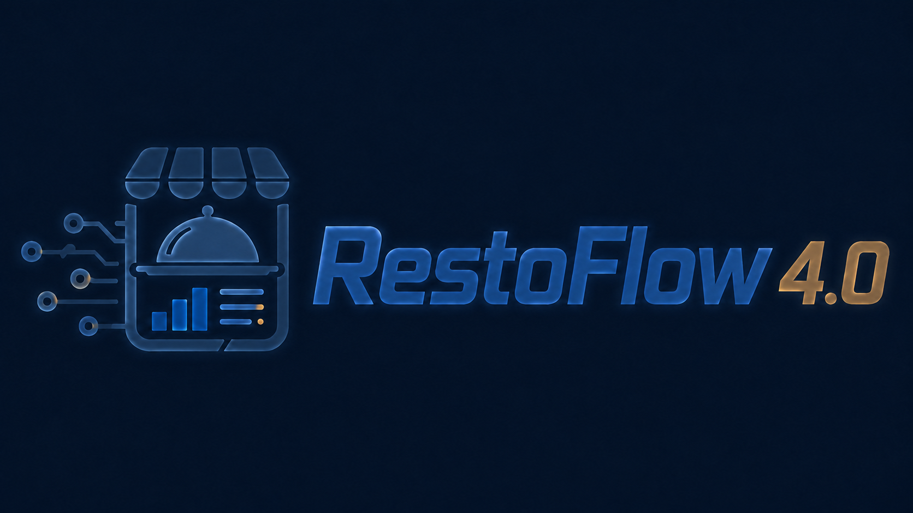

Estado actual del servicio
ACTIVO
El restaurante puede utilizar normalmente todos los módulos.

Administración de suscripciones
Desde este panel puedes activar o suspender temporalmente el acceso del restaurante al sistema RestoFlow 4.0.
El restaurante puede utilizar normalmente todos los módulos.